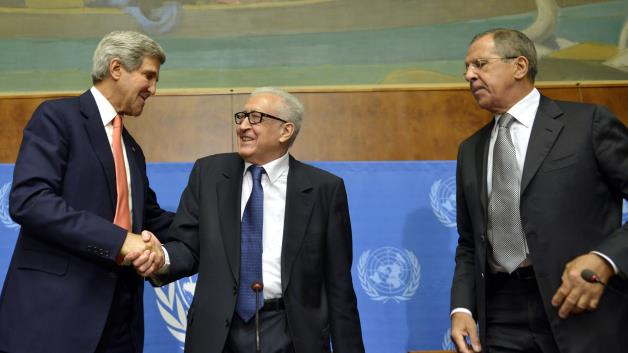

<!--doctype html-->
<html lang="en">
<head>
  <meta charset="utf-8">
  <link rel="stylesheet" href="css/normalize.css">
  <link rel="stylesheet" href="css/style.css">
  <title>The Daily Carrot | US, Russia reach deal on Syria chemical weapons/title>
</head>

<body>
<div id="container">

  <!--header block-->
  <header>
    <h1>The Daily Carrot</h1>
  </header>

  <!--nav block-->
  <nav>
    <ul>
      <li><a href="index.html">Home</a></li>
      <li><a href="#">US</a></li>
      <li><a href="#">World</a></li>
      <li><a href="#">Politics</a></li>
      <li><a href="#">Finance</a></li>
      <li><a href="#">Ecomony</a></li>
      <li><a href="#">Entertainment</a></li>
      <li class="noline"><a href="#">Weather</a></li>
    </ul>
  </nav>

  
    <div class="image">
    </div>


    <div class="article">
    <h1>US, Russia reach deal on Syria chemical weapons</h1>
    <h4>By Daffy Duck</h4>

    <h2>President Barack Obama made clear that "if diplomacy fails, the United States remains prepared to act."</h2>

    <p>GENEVA — A diplomatic breakthrough Saturday on securing and destroying Syria's chemical weapons stockpile averted the threat of U.S. military action for the moment and could swing momentum toward ending a horrific civil war.</p>

    <p>Marathon negotiations between U.S. and Russian diplomats at a Geneva hotel produced a sweeping agreement that will require one of the most ambitious arms-control efforts in history.</p>

    <p>The deal involves making an inventory and seizing all components of Syria's chemical weapons program and imposing penalties if President Bashar Assad's government fails to comply will the terms.</p>

    <p>After days of intense day-and-night negotiations between U.S. Secretary of State John Kerry and Russian Foreign Minister Sergey Lavrov and their teams, the two powers announced they had a framework for ridding the world of Syria's chemicals weapons.</p>

    <p>The U.S. says Assad used them in an Aug. 21 attack on the outskirts of Damascus, the capital, killing more than 1,400 civilians. That prompted President Barack Obama to ready American airstrikes on his order — until he decided last weekend to ask for authorization from the U.S. Congress. Then came the Russian proposal, and Obama asked Congress, already largely opposed to military intervention, to delay a vote..</p>
  
</div>   
</body>

</section>

</html>